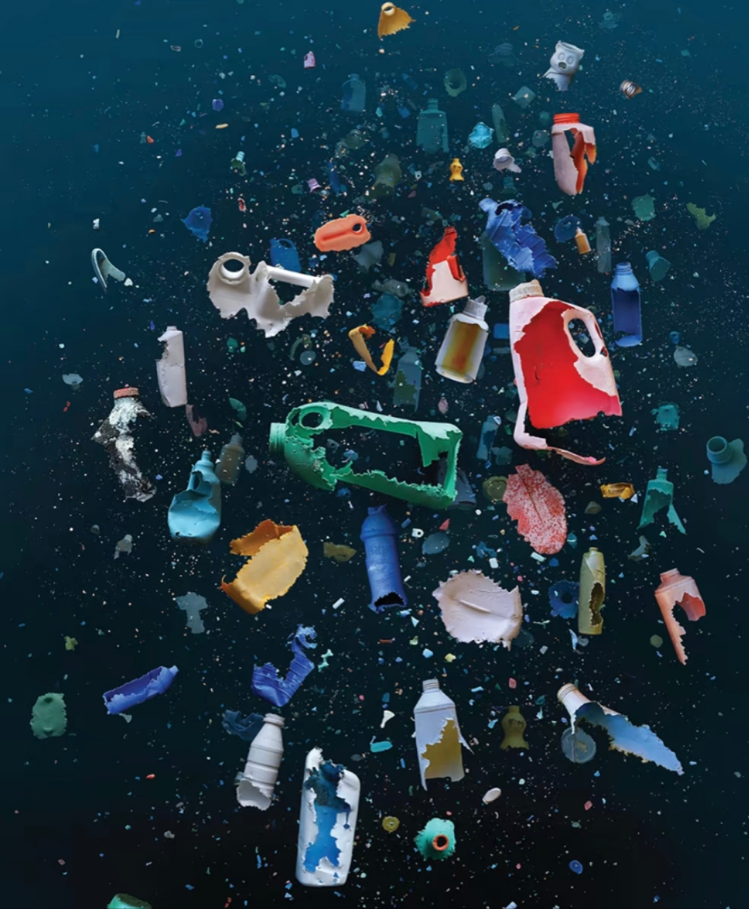
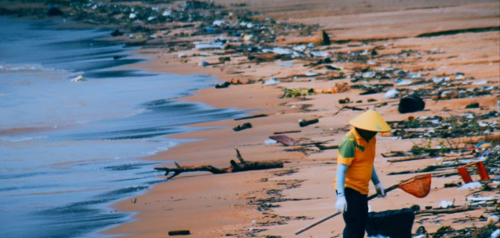

环保知识库
探索环保知识，了解生态保护与可持续发展的各种实用信息。
精选内容
塑料污染：你应该知道的关键事实
塑料污染已成为全球环境面临的最严峻挑战之一。每年约有800万吨塑料进入海洋，相当于每分钟倾倒一辆垃圾车的塑料到海洋中。研究表明，如果我们不改变当前的消费模式，到2050年，海洋中的塑料重量将超过鱼类。
为了应对这一挑战，我们每个人都可以采取行动：减少一次性塑料使用、选择可重复使用的替代品、支持禁塑政策、参与社区清洁活动等。本文将详细探讨塑料污染的来源、影响以及我们可以采取的解决方案。
阅读全文低碳饮食指南：如何通过饮食习惯减少碳排放
探索如何通过调整饮食习惯来减少个人碳足迹，包括增加植物性食物摄入、减少食物浪费等实用建议。

家庭垃圾分类完全指南：从入门到精通
详细解析家庭垃圾分类的基本原则、常见误区和高效技巧，帮助您更好地实践垃圾分类，减少环境负担。
10个简单实用的家庭节能技巧，每年可省电费300元
介绍家庭节能的简单可行方法，包括电器使用习惯、照明优化、制冷制热系统调整等，既环保又省钱。
零废弃生活入门：7天挑战计划
通过这个为期7天的挑战，学习如何逐步减少生活中的废弃物，从简单的购物袋替代到包装减量的详细指导。

气候变化与我们：理解科学背后的真相
深入浅出地解释气候变化的科学原理、全球影响以及各国应对措施，帮助读者全面理解这一全球性挑战。

家庭节水指南：每天可节约50升水的小技巧
分享家庭节水的实用方法，包括淋浴习惯优化、节水器具选择、雨水收集利用等多种可持续水资源利用方案。
订阅环保知识更新
每周精选环保知识和实用技巧，直接发送到您的邮箱